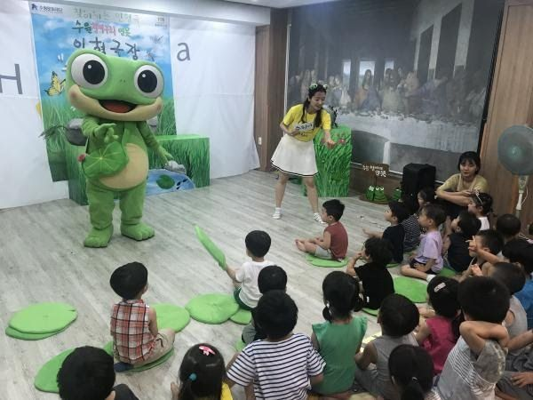
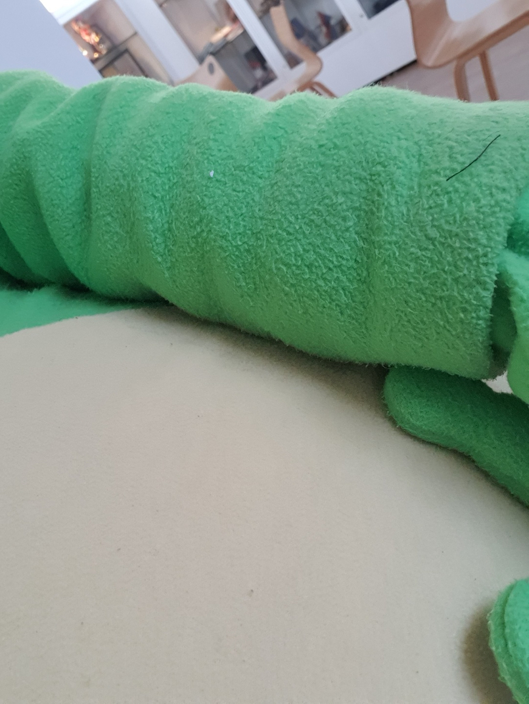
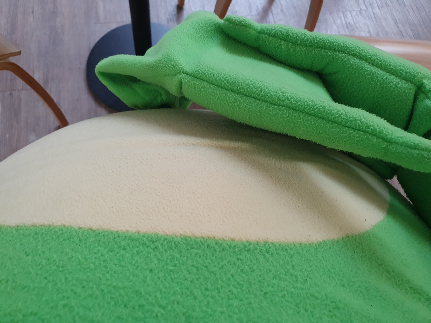

여기 수원의 마스코트인 '수원이'가 있습니다. 굉장히 귀엽습니다.
수원 청개구리를 모티브로 만든 캐릭터입니다.

귀여워서 이런 식으로 온갖 행사에 동원됩니다.


네. 저도 동원되었습니다.
작년에도 수원이 탈 쓰고 시장님이랑 사진 찍었어요. 저 수원이가 접니다.
올해도 역시나 찍었습니다. 탈 쓰면 앞이 안 보여서 주무관님들이 손 잡고 이끌어주십니다. 그리고 머리 진짜 무거워요. 그래도 뭔가 포근하고 재밌습니다. 여러분도 인형탈 알바 해보시길 바랍니다.
후원댓글 8개
댓글 8개 ▼